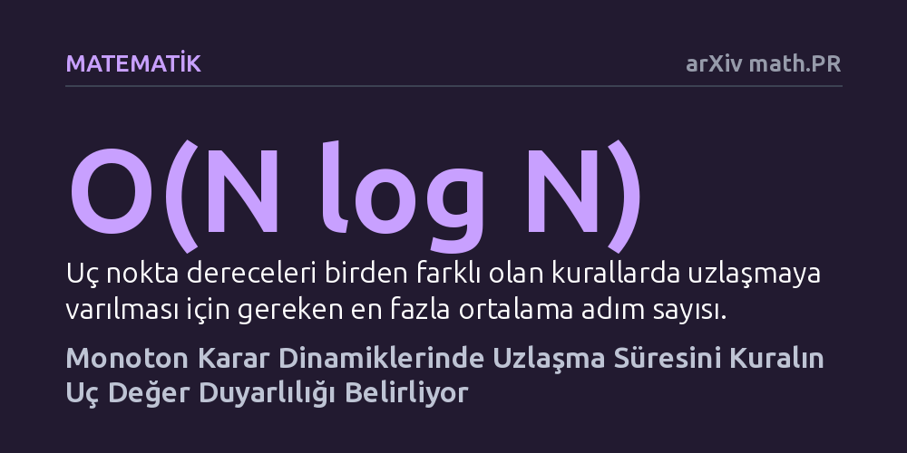

MATEMATIK · arXiv math.PR · 2026-09-08
Rastgele örneklemeyle karar güncelleyen N bireylik ağlarda fikir birliğine varma süresi incelendi. Matematiksel analiz, uzlaşma süresinin karar kuralının uç duyarlılığına göre N log N ile N² arasında değiştiğini kanıtladı.
Yerel karar kurallarındaki küçük değişikliklerin, tüm grubun fikir birliğine varma süresini belirgin şekilde hızlandırabileceğini veya yavaşlatabileceğini gösterir.

Sosyal gruplardan biyolojik sürülere ve yapay zeka ağlarına kadar pek çok sistemde bağımsız bireylerin ortak bir karara varması gerekir. Bu süreçte herkesin aynı anda ve merkezi bir yönlendiriciyle uzlaşması nadiren görülür. Çoğu durumda bireyler çevrelerindeki birkaç kişinin fikrine bakar ve kendi durumunu zamana yayılmış olarak günceller.
Peki, bu tür yerel etkileşimler sonucunda bütün bir topluluğun aynı fikirde birleşmesi kaç adım sürer? Bu soru, dağıtık sistemlerin hızını ölçmek ve sosyal ağlardaki kutuplaşmaların hangi koşullarda çözüleceğini anlamak açısından temel bir matematiksel problemdir.
Çalışmada, N sayıda bireyden oluşan bir ağ yapısı asenkron dinamikler üzerinden ele alınıyor. Her adımda rastgele seçilen bir birey, topluluktan yerine koyarak rastgele r sayıda bireyin durumunu örnekliyor ve sabit bir kurala göre kendi fikrini güncelliyor. Bireylerin durumu yalnızca iki değerden (0 veya 1) oluşuyor.
Modele dahil edilen kural 'monoton' olarak tanımlanıyor; yani grupta 1 durumundaki birey sayısı arttıkça kuralın 0 üretme ihtimali artmıyor. Yazar, sistemdeki tüm bireylerin ilk kez aynı duruma ulaştığı uzlaşma süresinin beklenen değerini matematiksel olasılık yöntemleriyle hesaplıyor.
Araştırma, uzlaşma süresini kuralın 'uç nokta dereceleri' adı verilen iki duyarlılık ölçüsünün belirlediğini gösteriyor. Bu ölçüler, grupta neredeyse herkes hemfikirken tek bir aykırı bireyin kuralı tersine çevirme potansiyelini ifade ediyor. Eğer kural tek bir bireye hassas değilse, sistem N log N mertebesinde bir sürede çok hızlı biçimde uzlaşmaya varıyor.
Buna karşılık kural yalnızca tek bir bireyin fikrine göre belirleniyorsa (diktatör kuralı veya seçmen modeli), uzlaşma süresi N² düzeyine fırlayarak oldukça yavaşlıyor. Uç derecelerden yalnızca birinin etkin olduğu ara rejimde ise uzlaşma hızı, kuralı zorlayan en küçük koordinat sayısına bağlı olarak N^(2-1/m) mertebesinde kalıyor.
Elde edilen sonuçlar, bireylerin kullandığı yerel karar kuralındaki küçük bir duyarlılık farkının tüm topluluğun uzlaşma hızını dramatik şekilde değiştirdiğini kanıtlıyor. Aykırı tekil sesleri filtreleyen kurallar topluluğu hızla bir sonuca taşırken, bireysel uçlara aşırı duyarlı kurallar süreci ciddi şekilde yavaşlatıyor.
Bu çalışma, bilgisayar bilimlerinde dağıtık mutabakat protokollerinin tasarımı ve sosyal bilimlerde fikir yayılımı modelleri için farklı dinamikleri tek bir matematiksel çerçevede birleştiren teorik bir temel sunuyor.